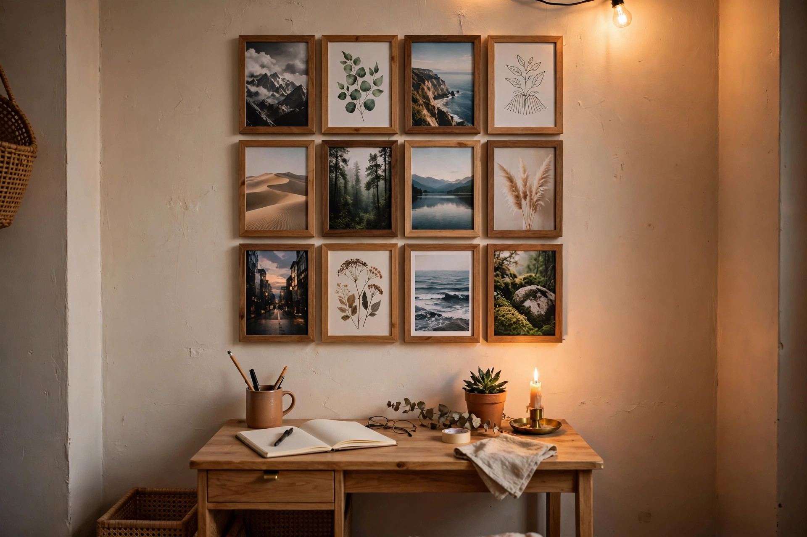

Budget Decor & DIY
DIY Photo Wall Ideas for a Small Apartment
Intro
A photo wall is the most personal decoration a flat can have — it is your people, your places and your memories, all in one place. But a bad photo wall looks like a noticeboard, and a good one looks like a gallery. The difference is not money: it is layout, spacing and a little planning. In a small flat, a photo wall works best when it is one wall, one layout, and photos that mean something.
This guide has 12 DIY photo wall ideas — layouts, frames and a grid that fits a small wall. Start by choosing the wall, then lay the photos on the floor first: the floor is the best place to plan a wall.

1. The neat grid: same frames, same spacing — $15–$20
A grid of identical frames, evenly spaced, is the calmest photo wall and the easiest to plan. Six matching frames cost about $18, and the photos inside can be any mix. Hang them in two rows of three, with 5 cm between every frame, and measure from the centre outwards so the grid stays centred on the wall. A grid suits a hallway or the wall above a sofa, where order looks intentional. Use black-and-white photos for a grid that always matches.
2. The ledge wall: lean, don't hang — $10–$15
Two picture ledges, one above the other, let you lean photos against the wall and swap them without new holes. Two ledges cost about $12. Lean large frames at the back and small ones in front, overlapping slightly, and add a postcard or two between them. A ledge wall is the best choice for renters, and for anyone who changes their photos often. When a new photo arrives, it goes on the ledge — no drilling, no measuring.
3. The salon wall: mixed frames, one colour — $10–$15
A salon wall mixes frame sizes and shapes, but keeps one frame colour — all black, all white or all wood — so the mix looks deliberate. Collect frames from thrift shops for $2–$3 each, paint them the same colour, and arrange them on the floor first. Start with the largest frame in the centre, and build outwards. A salon wall suits a living room, where a little chaos feels homely rather than messy.
4. The single row above the sofa — $8–$12
One straight row of four or five small frames above the sofa is a photo wall that takes ten minutes to hang and never overwhelms a small room. Four frames cost about $10. Hang the row at eye level when seated — about 120 cm from the floor to the centre of the frames — and keep the spacing equal. A single row is the best photo wall for a small flat, because it fills the wall without filling the room.
5. The stairway or hallway gallery — $10–$15
A hallway or the wall beside a staircase is a natural gallery: you walk past it every day, and it needs no other decoration. Hang photos in a line that follows the stairs, or in a straight row at eye level in a hallway. Five frames cost about $12. A hallway gallery turns a forgotten space into the most looked-at wall in the flat. Use photos in chronological order, so the wall tells a story as you walk along it.
6. Washi tape frames for renters — $3–$6
Washi tape rectangles on the wall, with a photo inside each one, make a photo wall with no nails at all. A roll of tape costs about $4. Tape the rectangles in a neat grid, stick the photos inside with a small piece of tape, and peel it all off when you move. Washi frames suit a bedroom or a study, where a light, playful wall fits the room. Choose one tape colour for a calm wall, or two for a cheerful one.
7. A photo string with pegs — $5–$8
A length of string or wire across a wall, with photos pegged to it, is a photo wall that changes in seconds. String, pegs and two small hooks cost about $6. Hang the string at eye level, peg the photos along it, and swap them whenever you like. A string wall suits a child's room, a kitchen or a rented flat, because it holds a lot of photos and leaves only two small holes. Keep the photos the same size, so the string looks tidy rather than tangled.
8. One big photo, printed large — $8–$12
One favourite photo, printed at A3 size and framed simply, is a photo wall of one — and in a small room, one large photo has more impact than twenty small ones. A large print costs about $5, a frame about $7. Choose a photo with space in it — a landscape, a street, a group with sky above — so the large size feels calm rather than crowded. Hang it where you see it first when you walk in, and let it be the room's picture.
9. The heart or shape layout — $8–$12
Photos arranged in a shape — a heart, a circle, a rectangle — turn a photo wall into a feature. Lay the photos on the floor in the shape first, then transfer them to the wall one by one. Six to eight small photos cost about $10 in frames or tape. A heart shape suits a bedroom; a clean rectangle suits a living room. Keep the photos the same size for a shape that reads clearly from across the room.
10. Mix photos with art and postcards — $5–$10
A photo wall does not have to be only photos: mix in a postcard, a small print, a ticket stub or a pressed flower, and the wall becomes a memory wall. The extras cost little — a postcard is $1, a print $3 — but they break up a wall of faces and add colour. Keep one frame colour and one spacing rule, so the mix still looks like one wall rather than a noticeboard. A memory wall is the most personal wall in the flat, because only you could have made it.
11. The fridge or magnetic wall — $0–$5
The fridge door is the original photo wall, and it still works: magnets cost about $4 a pack, and photos can be swapped daily. In a small kitchen, the fridge is often the largest magnetic surface, and a row of photos on it adds colour to a plain room. Use small photos, keep them in a neat grid, and do not cover the whole door — a tidy fridge looks cheerful, a covered one looks cluttered. Magnetic frames keep the photos flat and protected.
12. One photo wall, one wall only — $0
The cheapest idea costs nothing: keep your photos to one wall. A flat with photos on every wall feels busy; a flat with one photo wall feels like a home with a gallery. Choose the wall that matters — above the sofa, in the hallway, beside the bed — and keep the other walls for art, shelves or nothing at all. In a small flat, one photo wall is a feature; three photo walls are clutter.
Conclusion
A photo wall is not about how many photos you own — it is about one wall, one layout and photos that mean something. A neat grid, a ledge or a single row can each turn a bare wall into the most personal spot in the flat, for under $20. Lay the frames on the floor first, hang them level, and leave the other walls alone. The wall will tell your story every time you walk past it.
Budget recap
- Six matching frames (grid): ~$18 - Two picture ledges: ~$12 - String + pegs + photos: ~$6
Total for one photo wall: ~$6–$20 — or $0 with tape frames and photos you already own.
Pinterest pin titles
- DIY Photo Wall Ideas for a Small Apartment — 12 Layouts
- 12 Photo Wall Layouts That Fit a Small Wall
- One Wall, Your Story: 12 DIY Photo Wall Ideas